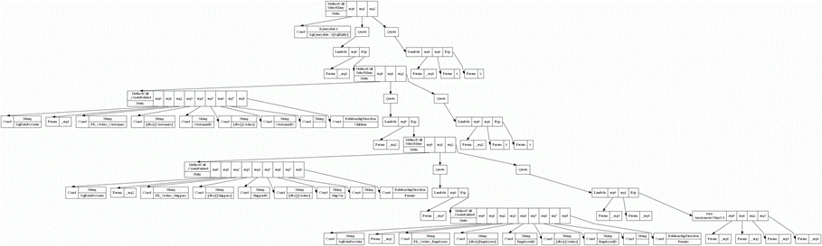

- ← Fun with a toy robotic arm!
- SQL Provider - new stuff including PostgreSQL support and option types! →
Visualizing LINQ with GraphViz
After my talk last night, several people expressed an interest in the script I was using to draw the LINQ expression trees. I have uploadedhere on github.
This is just a script I use in development. It doesn't visualize every node by a long shot, and does a fair bit of name replacing to make some of the very long generic type names readable. You will need GraphVizinstalled to use this script. You might need to point the function that does the generation at the location where you've installed it.
You can use it like this from FSI :
1 2 3 |
#load "GraphViz.fsx" FSharp.Data.Sql.Common.QueryEvents.LinqExpressionEvent |> Observable.add GraphViz.toGraph |
Now, whenever you evaluate a query expression, it will pop up a bunch of images with whatever your machine uses to view SVG files, like this rather lovely one below. Have fun.
edit; this will spam your temp directory with svg files!
